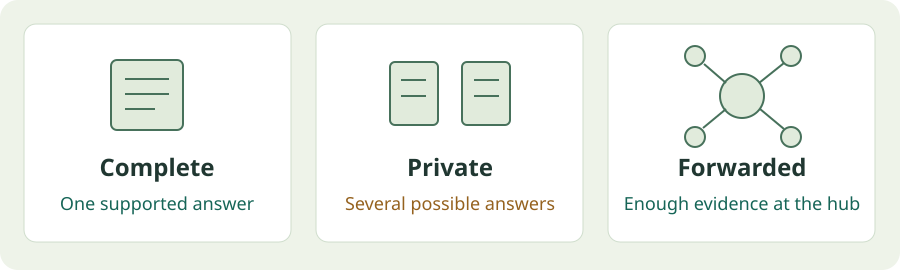

When agents see different evidence¶
A puzzle can have one answer overall while each agent still lacks enough information to identify it.

Replay the information controls¶
clue-benchmark examples replay distributed-evidence \
--output runs/replayed
This command uses eight saved worlds. It checks the bundled files and recomputes what each view logically permits. It does not call a model.
Open runs/replayed/report/index.html to inspect the result.
What changes across the views?¶
| View | What the solver finds | What that means |
|---|---|---|
| Complete evidence | One answer in all 8 worlds | An answer can be supported. |
| Private evidence | All 32 private views are ambiguous | Guessing is different from knowing. |
| Star forwarding | Enough evidence reaches the hub in all 8 worlds | Delivery can restore answerability. |
Which reports arrive matters. Receiving more reports does not automatically make an answer identifiable.
Forwarding is programmed
This fixture uses a fixed star protocol. It demonstrates evidence delivery, not learned conversation or a universal ranking of network topologies.
What did the models do?¶
The historical low-thinking Flash measurements were:
- 8/8 correct answers with complete evidence.
- 32/32 appropriate abstentions on ambiguous private views.
- 8/8 correct answers at the star hub after forwarding.
Lite made two correct but unsupported guesses in an ambiguous ring condition. A lucky answer does not establish sufficient evidence.
These are saved model measurements. The offline command above recomputes solver controls; it does not rerun inference.
See measured results and source records →
Generate a fresh small example¶
clue-benchmark generate-dataset \
--preset distributed \
--output runs/fresh-distributed
Each private view receives a certified partition. Forwarded or replicated reports retain their original identities.
Files written by the replay
replay.json— recomputed solver controls.- The five-file evaluator bundle — saved cases, partitions, answers, certificates and manifest.
report/index.html— the readable local report.
The fixture ships with the package. Once installed, replay needs no repository clone, key or network.